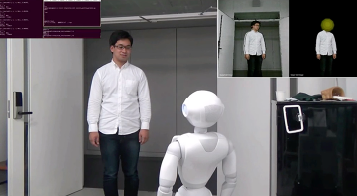
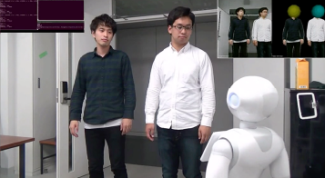
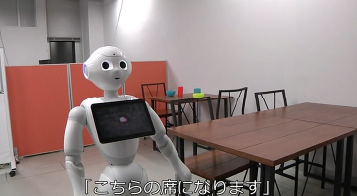

本研究JST/CREST「実践知能アプリケーション構築フレームワーク PRINTEPS（読み方：プリンテプス、以降PRINTEPS）の開発と社会実践」(2014.10-2020.3)は、開発者向けではなく、ユーザ自身が、聞いて話して（音声対話）、考えて（知識推論）、見て動いて（画像センシング・動作）という一連の知的振舞いを実行する人工知能・知能ロボットアプリケーションを数時間から数日で開発でき、その知的振舞いを見て考察・再発見することで、知のPDCAサイクルがまわり、ユーザと人工知能・知能ロボット間の知能共進化（Co-evolution of Intelligence）が起こるプラットフォームの開発を目指しています。
PRINTEPSは、ユーザにとって必要なAIアプリケーションをユーザ自身が開発できるプラットフォームであり、多様なAIアプリを社会に普及させるためのエンジンです。
ニュース
- 2019年10月 3日(木)：PRINTEPSに関する記事が Open Access Government に掲載されました ( URL)
- 2019年 8月 3日(土)：「AIロボットを使った授業作りを学ぼう」第1回セミナーを開催しました
- 2019年 2月 8日(金)：読売教育ネットワーク会報49号2019年1月号に議論支援ロボットの取り組みが掲載されました(URL)
- 2018年12月 1日(土)：PRINTEPSに関する記事がScience Impactに掲載されました ( URL)
- 2018年 2月28日(水)：読売教育ネットワーク会報38号2018年2月号に教師ロボット連携授業の取り組みが掲載されました(URL)
- 2018年10月 6日(土)-7日(日)：慶應義塾大学理工学部の第19回矢上祭で，ロボット喫茶店を出店しました
- 2017年11月18日(土)： 第１回クラスルームＡＩシンポジウムを開催しました
- 2017年10月 7日(土)-8日(日)： 慶應義塾大学理工学部の第18回矢上祭で，ロボット喫茶店を出店しました
- 2016年12月28日(水)：読売教育ネットワーク会報24号2016年12月号に教師ロボット連携授業の取り組みが掲載されました(URL)
PRINTEPSとは
PRINTEPSは、知識推論、音声対話、人と物体の画像センシング、動作という4種類の要素知能（バックグラウンドで学習）を統合した総合知能アプリの開発を目標にするとともに、開発者向けではなく、ユーザが設計段階から参加し（ユーザ参加型デザイン)、ユーザがソフトウェア（SW）モジュール結合によりAIアプリケーションをアジャイルに（数時間から数日で）開発できることを目指しています。
研究内容
- PRINTEPS
- ロボット喫茶店
- 教諭ロボット連携授業
PRINTEPSにおけるワークフローエディタは、サービス、プロセス、モジュールを組み合わせたワークフローを構築するだけで、知識推論・学習、音声対話、人と物体の画像センシング、マニュピュレーション・動作という4種類の要素知能を統合した総合知能アプリを、エンドユーザが容易に開発できることを目指したWebアプリケーションです。
構築したワークフローは、代表的なロボット開発環境であるROS (Robot Operating System)上で実行可能なPythonのソースコードに自動変換することが可能です。
知能ロボットのために、聞いて話して（音声対話）、考えて（知識推論、機械学習）、見て動いて（画像センシング、マニュピュレーション）という一連の知的振舞いを、エンドユーザが俊敏（アジャイル）に開発して外在化させることを支援します。
- 
- 
- 
ユーザが知能ロボットの知的振舞いを見て考察・再発見することにより、知能のPDCAサイクルがまわりはじめ、知能共進化(Co-evolution of Intelligence)（人の知能と機械知能が互いに進化し続けていくことで、所与の問題が解決される）を実現できると考えています。
このプロジェクトで使用されているロボット

|

|

|

|

|

|

|
|
Pepper ©SoftBank |
NAO ©SoftBank |
Sota ©Vstone |
SociBot ©Engineered Arts |
Hironx ©KAWADA |
HSR ©TOYOTA |
JACO2 ©Kiova |
関連論文
- Takeshi Morita, Naho Kashiwagi, Ayanori Yorozu, Hideo Suzuki, Takahira Yamaguchi, “Evaluation of a Multi-Robot Cafe based on Service Quality Dimensions”, The Review of Socionetwork Strategies, Springer, pp.1-22, 2019.
- Takeshi Morita, Kodai Nakamura, Hiroki Komatsushiro, Takahira Yamaguchi, “PRINTEPS: An Integrated Intelligent Application Development Platform based on Stream Reasoning and ROS”, The Review of Socionetwork Strategies, Springer, Vol. 12, Issue 1, pp 71–96, 2018.
PRINTEPSの有用性を評価するために、本プロジェクトでは、小学校の教諭と連携して、PRINTEPSを用いた教諭ロボット連携授業の開発と実証実験を行っています。ここでは、慶應義塾幼稚舎と東京都杉並区立浜田山小学校での実証実験を紹介します。
シナリオエディタによる教諭と複数ロボット連携授業の開発
PRINTEPSワークフローエディタを用いて、教諭が授業の流れを日本語ワークフローにより記述し、ワークフローをプログラムコードに自動変換することが可能です。しかしながら、授業の流れは、教諭・生徒・ロボット・表示装置等の情報機器、人と人、人と機械（ロボット・情報機器）、機械と機械（以下、人と機械をまとめてアクターと呼ぶ）間の情報インタラクションであり、処理の流れではなくインタラクションを記述して、授業全体を俯瞰したいという要望が教諭から出されました。そこで、アクター間で交換される知識情報を記述するシナリオエディタを開発しました。
慶應義塾幼稚舎６年生４クラス（１クラス３６名）を対象にして、理科「人の体の仕組み」を学習単元とし、人型ロボットPepper（ペッパー）と 表情が変化するSociBot（ソシボット）を利用した授業において、シナリオエディタを利用しました。 本授業では、数名の児童から構成される各班で、二択か三択の中から解答の札を選んで、札を立てると、机上の画像センサーがその札を認識し、パソコンが各グループの成績を自動的に付けていくアプリケーションをシナリオエディタを用いて開発しました。
図１は、シナリオエディタで開発した授業開始に関するシナリオです。このシナリオでは、教諭とPepperがインタラクションを取りながら、「カエルの解剖」の振り返りクイズに関する導入説明を行っています。Pepperレーンで、「頭が触れられるまで待機」ノードが複数回現れていますが、教諭が児童に話しかける間（この話しかけは教諭のアドリブとし、シナリオには明記されていません）、Pepperに待機させ、教諭がPepperの頭に触れるとその動作が「頭が触れられるまで待機」ノードの出力となり、次のノードに移動して、Pepperが記述されているテキストを読み上げます。また、ディスプレイレーンでは、教室のテレビにクイズや画像などを提示することができます。
SociBotは、英国製のロボットで、顔の中にLED電球が埋め込まれ、顔色や表情を変えられる人型ロボットです。SociBotは、据え置き型で移動できない上半身だけのロボットだったため、移動可能型に拡張し、図２の写真のように、表情を変化させながら、教室を周回できるようにしました。
シナリオエディタと慶應義塾幼稚舎における教諭ロボット連携授業の詳細については、関連文献[2,4,5]を参照してください。
-
 図１：シナリオエディタで開発した授業開始に関するシナリオ
図１：シナリオエディタで開発した授業開始に関するシナリオ
-
 図２：表情を変えて教室を周回するSociBot
図２：表情を変えて教室を周回するSociBot
授業シナリオ検索エンジンの開発
PRINTEPSシナリオエディタを用いれば、教諭一人でも授業支援ロボットのアプリケーションを開発できる状況に近づいてきましたが、開発に時間がかかることが課題でした。特に、教諭ロボット連携授業を初めて経験する教諭にとっては、PRINTEPSシナリオエディタ利用のハードルは高いです。そこで今までに、社会（地球温暖化、自然の未来）、理科（てこの規則性、人の体の仕組み、振り子の運動）、探求（総合科目）（エネルギーの仕組み）に関する教諭ロボット連携授業を開発してきたので、これらの授業シナリオ群を構造化し、いくつかの観点から授業シナリオを検索できるエンジンを開発することにしました。
本検索エンジンでは、学習単元・授業進行・ロボット操作という３種類の索引群から検索できるようにし（図３、図４、図５）、３種類の索引群を使って検索条件と照合した過去の授業シナリオに、説明文と動画を付けて提示し、ユーザはそれを元に自分の授業シナリオを開発できます（図６）。
振り子の実験を対象にし、東京都杉並区立浜田山小学校の教諭ロボット連携授業未経験の教諭２名に本検索エンジンを利用し評価してもらいました。本実験では、音楽に合わせて、振り子の長さ・おもりの重さ・振れ幅といった条件を変えながら振り子を振らせて周期を測定する実験を繰りことにより「ふりこの一往復にかかる時間は何によって決まるのだろうか」を考えていきます。本実験では、人型ロボットＮＡＯ（ナオ）、ロボットアーム、センサーが連携して、振り子を振らせ、周期を自動測定し、その測定精度の高さを示しました。
実験実施後、２名の教諭にインタビューしたところ「ロボットを初めて触る人が陥りがちな典型的な失敗事例を事前に知ることができ、授業設計に役立てることができた」「カテゴリの絞り込み・組み合わせによって探したい授業場面を見つけられるのは便利であると思った」という評価が得られる一方、「本システムに頼りすぎると創造性が阻害されたり、硬直化した授業づくりになったりしないか？」というコメントも提示されました。
授業シナリオ検索エンジンと浜田山小学校における教諭ロボット連携授業の詳細については、関連文献[1,3]を参照してください。
-
 図３：学習単元に関する索引群
図３：学習単元に関する索引群
-
 図４：授業進行に関する索引群
図４：授業進行に関する索引群
-
 図５：ロボット操作法に関する索引群
図５：ロボット操作法に関する索引群
-
 図６：授業シナリオ検索エンジンのスクリーンショット
図６：授業シナリオ検索エンジンのスクリーンショット
関連文献
研究メンバー


 小篠 裕子慶應義塾大学大学院
小篠 裕子慶應義塾大学大学院 
 萬 礼応慶應義塾大学大学院
萬 礼応慶應義塾大学大学院